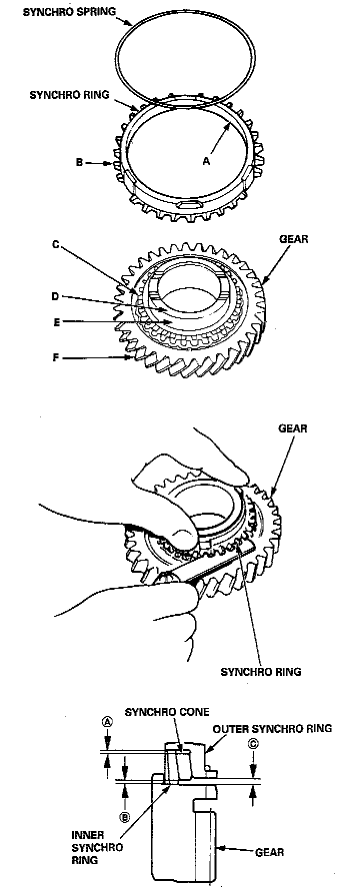

Synchronizer Ring, M/T
DIMENSIONS
Synchro Ring-to-Gear Clearance:
Standard: 0.85 - 1.10 mm (0.033 - 0.043 inch)
Service Limit: 0.4 mm (0.02 inch)
Double Cone Synchro-to-Gear Clearance
Standard:
(A): (Outer Synchro Ring to Synchro Cone) 0.5 - 1.0 mm (0.02 - 0.04 inch)
(B): (Synchro Cone to Gear) 0.5 - 1.0 mm (0.02 - 0.04 inch)
(C): (Outer Synchro Ring to Gear) 0.95 - 1.68 mm (0.037 - 0.066 inch)
Service Limit:
(A): 0.3 mm (0.01 inch)
(B): 0.3 mm (0.01 inch)
(C): 0.6 mm (0.02 inch)